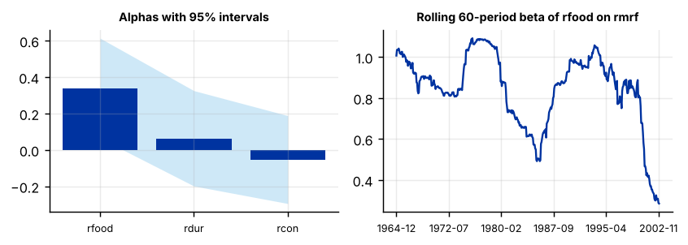

Run this model on your own data in Open Econometric Systems →
Step 1The question and the model
Do the factors price the assets? The factor model is
where \(f_t\) are excess returns of the factors (for the CAPM, the market). If the factors price the assets, every \(\alpha_i\) is zero. A t-test on one alpha says little when there are many assets, so Gibbons, Ross and Shanken (1989) test all alphas at once:
where \(\hat\Sigma\) is the residual covariance, \(\hat\mu\) the mean of the factors and \(\hat\Omega\) their covariance. The denominator is the squared Sharpe ratio of the factors; the numerator measures how much the alphas would add to it.
How to write it: the model
We test whether the market factor prices three industry portfolios by regressing each portfolio's monthly excess return on the market excess return. The alpha of each portfolio is tested with Newey-West standard errors, and the hypothesis that all alphas are jointly zero is tested with the Gibbons, Ross and Shanken (1989) F test, which is exact for normal homoskedastic errors.
Step 2Load the data
import numpy as np
import pandas as pd
import oes_engine as oes # pip install -e open-econometric-systems/oes-engine
data = open("capm.csv").read()
d = pd.read_csv("capm.csv")
print(d.shape, d.month.iloc[0], "to", d.month.iloc[-1])
print(d[["rfood", "rdur", "rcon", "rmrf"]].agg(["mean", "std"]).round(2))
print("Sharpe ratio of the market (monthly):", round(d.rmrf.mean() / d.rmrf.std(), 3))(516, 6) 1960-01 to 2002-12
rfood rdur rcon rmrf
mean 0.66 0.53 0.43 0.42
std 4.54 5.80 5.79 4.48
Sharpe ratio of the market (monthly): 0.093How to read it
The panel has 516 months, January 1960 to December 2002. The market excess return averages 0.42% a month with a standard deviation of 4.48, a monthly Sharpe ratio of 0.093. The food portfolio has the highest mean (0.66) and the lowest volatility (4.54); durables and construction are more volatile (5.80 and 5.79). The returns are already excess returns, so no risk-free rate is subtracted.
Step 3Estimate alphas and betas
spec = dict(assets=["rfood", "rdur", "rcon"], factors=["rmrf"], time="month")
r = oes.run("capm", data, spec)
oes.summary(r)
oes.show(r, "Alpha and factor loadings")
oes.show(r, "Factor loadings with standard errors")Periods: 516
Assets: 3
GRS F: 2.61
GRS p: 0.0508
Factor Sharpe ratio: 0.093
Sharpe ratio with the alphas: 0.155
Alpha and factor loadings (Newey-West standard errors for alpha)
Alpha s.e. t p Beta: rmrf R-squared
Asset
rfood 0.3392 0.1403 2.4181 0.0156 0.7834 0.5976
rdur 0.0636 0.1337 0.4757 0.6343 1.1113 0.7394
rcon -0.0530 0.1233 -0.4303 0.6670 1.1571 0.8031
Note: Excess returns; Newey-West with 5 lags.
Factor loadings with standard errors
Beta: rmrf
Asset
rfood 0.783 (0.056)
rdur 1.111 (0.036)
rcon 1.157 (0.038)How to read it
All three portfolios load strongly on the market. The beta of food is 0.78 (Newey-West standard error 0.056): a defensive industry that moves less than the market. Durables and construction have betas of 1.11 (0.036) and 1.16 (0.038): cyclical industries that amplify it. The R-squared is 0.60 for food and 0.74 and 0.80 for the other two, so the market explains most of the variation in each.
The alpha is the average monthly return the market does not explain. For food it is 0.34 percentage points a month (t = 2.42, p = 0.016), about 4% a year, which is significant on its own. For durables (0.06, t = 0.48) and construction (\(-0.05\), t = \(-0.43\)) it is indistinguishable from zero. The summary shows the joint GRS test (F = 2.61, p = 0.051) and the Sharpe ratios discussed below.
Step 4Test the alphas jointly
oes.show(r, "Joint test of the alphas")
oes.plot(r)Joint test of the alphas
Statistic p-value Detail
Test
GRS: all alphas jointly zero 2.6103 0.0508 F(3, 512); H0: the factors price the assets
Wald (chi-square form of the GRS) 7.8920 0.0483 3 df
How to read it
The GRS test asks whether the three alphas are zero together: F(3, 512) = 2.61, p = 0.051. The chi-square form of the same test gives 7.89 (p = 0.048). The market factor does not quite price the three portfolios at the 5% level: the rejection is marginal and comes from food. The chart shows each alpha with its 95% interval; only food's interval excludes zero.
The Sharpe ratio explains the size of the effect. The market alone has a monthly Sharpe ratio of 0.093; adding the three alphas would raise the best attainable ratio to 0.155. That is the gain an investor could get by trading on the pricing errors, if they were real.
Step 5Stability: rolling beta
oes.plot(r)
How to read it
The rolling 60-month beta of food is not constant. It was 1.01 in the first window (ending 1964), reached its highest value, 1.09, in December 1975, and fell to 0.29 in the last window (ending December 2002). The food industry became much less sensitive to the market over the sample, a reminder that a single full-sample beta averages over very different periods and that an alpha estimated on the whole sample partly reflects the changing beta.
Step 6Robustness: market timing and sub-periods
# market timing (Treynor-Mazuy): add the squared market return as a second factor
d["rmrf2"] = d.rmrf ** 2
rt = oes.run("capm", d.to_csv(index=False), dict(assets=["rfood", "rdur", "rcon"], factors=["rmrf", "rmrf2"], time="month"))
oes.show(rt, "Alpha and factor loadings")
oes.show(rt, "Joint test of the alphas")
# sub-periods
for name, part in (("1960-1981", d.iloc[:264]), ("1982-2002", d.iloc[264:])):
rs = oes.run("capm", part.to_csv(index=False), spec)
g = rs["tables"][2]["rows"][0]
print(name, "GRS F =", g[1], " p =", g[2], " betas:", [row[5] for row in rs["tables"][0]["rows"]])Alpha and factor loadings (Newey-West standard errors for alpha)
Alpha s.e. t p Beta: rmrf Beta: rmrf2 R-squared
Asset
rfood 0.3376 0.1496 2.2571 0.0240 0.7835 7.5000e-05 0.5976
rdur 0.0204 0.1506 0.1353 0.8924 1.1140 2.0810e-03 0.7396
rcon -0.1097 0.1432 -0.7656 0.4439 1.1607 2.7250e-03 0.8034
Note: Excess returns; Newey-West with 5 lags.
Joint test of the alphas
Statistic p-value Detail
Test
GRS: all alphas jointly zero 2.1924 0.0880 F(3, 511); H0: the factors price the assets
Wald (chi-square form of the GRS) 6.6416 0.0842 3 df
1960-1981 GRS F = 0.4421 p = 0.7231 betas: [0.91606, 1.069111, 1.197517]
1982-2002 GRS F = 3.5051 p = 0.016 betas: [0.6522, 1.14919, 1.118022]How to read it
Market timing. Adding the squared market return (Treynor-Mazuy) leaves the betas unchanged (food 0.78, durables 1.11, construction 1.16) and the coefficients on the squared term are tiny (7.5e-05, 0.0021 and 0.0027 per squared percentage point; the squared market return is as large as 100 to 1,000 in crisis months), so there is no sign of market timing. The food alpha stays at 0.34 (p = 0.024) and the joint test is a little weaker (F = 2.19, p = 0.088).
Sub-periods. The joint test splits the sample in two: for 1960 to 1981 F = 0.44 (p = 0.72), for 1982 to 2002 F = 3.51 (p = 0.016). The mispricing is a feature of the second half, when the food beta fell from 0.92 to 0.65. This is a caution for the write-up: a rejection of the model on the whole sample can come from one period.
Step 7Diagnostics: size and power of the GRS test
rng = np.random.default_rng(0)
rej = {0.0: 0, 0.35: 0}
for k in range(100):
T = 240; f = rng.normal(0.5, 4, T); beta = np.linspace(0.6, 1.4, 5)
sim = pd.DataFrame(np.outer(f, beta) + rng.normal(0, 2, (T, 5)), columns=list("abcde")); sim["m"] = f
for a in rej:
s2 = sim.copy(); s2[list("abcde")] += a
rs = oes.run("capm", s2.to_csv(index=False), dict(assets=list("abcde"), factors=["m"]))
rej[a] += rs["tables"][2]["rows"][0][2] < 0.05
print("rejection rate at the 5% level: alpha = 0 ->", rej[0.0] / 100, "; alpha = 0.35 per month ->", rej[0.35] / 100)rejection rate at the 5% level: alpha = 0 -> 0.06 ; alpha = 0.35 per month -> 1.0
How to read it
In 100 simulated samples of 240 months with five assets and no alpha, the 5% GRS test rejects in 6% of the samples, so its size is right. When every asset has a true alpha of 0.35 percentage points a month, it rejects in all 100: the test has ample power at this sample size. (The sampling error on a rejection rate from 100 samples is about 2 to 4 points.) The test suite also checks the alphas and betas against statsmodels with Newey-West errors, the GRS statistic against its formula and the multi-factor case with a known alpha and betas.
Step 8Write the results
How to write it: results
We regress the monthly excess returns of three U.S. industry portfolios on the market excess return, January 1960 to December 2002 (516 months). The market betas are 0.78 for food, 1.11 for durables and 1.16 for construction (Newey-West standard errors 0.04 to 0.06), and the market explains 60% to 80% of the variance. The alpha is 0.34 percentage points a month for food (t = 2.42, p = 0.016) and is not significantly different from zero for durables (0.06) or construction (\(-0.05\)). The GRS test of zero alphas for all three portfolios gives F(3, 512) = 2.61 (p = 0.051); the alphas would raise the monthly Sharpe ratio from 0.093 to 0.155. The result is not due to market timing (the squared market return is insignificant), but it depends on the period: the test does not reject in 1960 to 1981 (p = 0.72) and rejects in 1982 to 2002 (p = 0.016), when the rolling market beta of food fell from about 1.0 to 0.3. The size and power of the test in simulation are 6% and 100%.
References. Sharpe (1964), Journal of Finance; Lintner (1965), Review of Economics and Statistics; Gibbons, Ross and Shanken (1989), Econometrica; Fama and French (1993), Journal of Financial Economics; Newey and West (1987), Econometrica; Treynor and Mazuy (1966), Harvard Business Review; Verbeek (2004), A Guide to Modern Econometrics, Wiley.